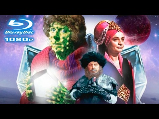
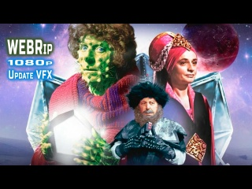
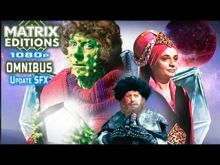
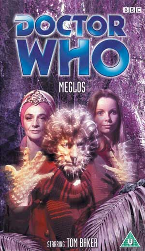
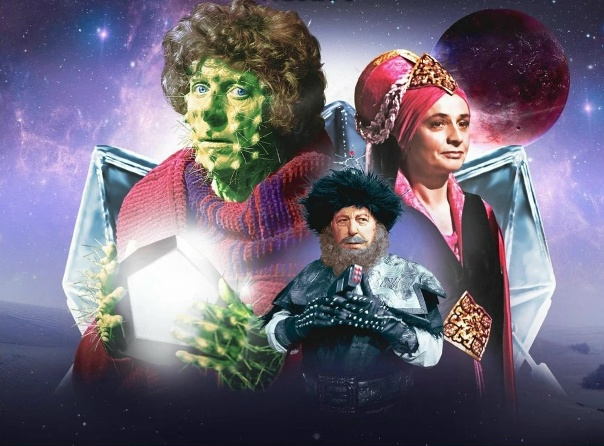

Субтитры: Русские и Английские |  |
|---|---|
с фанатским обновлением визуальных эффектов (cunningmunki) Субтитры: Русские и Английские |  |
с обновлением визуальных эффектов (cunningmunki) Субтитры: отсутствуют |  |
Meglos
Дата выхода: 27 сентября - 18 октября 1980
Формат: 4 эпизода по 25 мин.
| |
Доктора зовёт на помощь старый знакомый Застор — лидер планеты Тайгелла, где две фракции, саванты и деоны, враждуют из-за Додекахедрона, загадочного кристалла, питающего энергией всю цивилизацию. Но ТАРДИС застревает во временной петле — ловушке, расставленной Меглосом, последним из расы золфа-туранцев, разумным кактусом, способным принимать чужой облик. Приняв форму Доктора, Меглос проникает в город и похищает Додекахедрон, чтобы с его помощью уничтожить Тайгеллу. Серия примечательна двойной ролью Тома Бейкера — он играет и Доктора, и Меглоса в его обличье. Жаклин Хилл, первая спутница сериала (Барбара Райт), вернулась спустя шестнадцать лет — в роли Лексы, жрицы-фанатички. А Билл Фрейзер согласился на роль пирата Градджера лишь при условии, что ему разрешат пнуть К-9.
 VHS - март 2003 |  DVD - 10 января 2011 |  Blu-ray - 18 марта 2019 * Версия в нашей группе |
|---|
